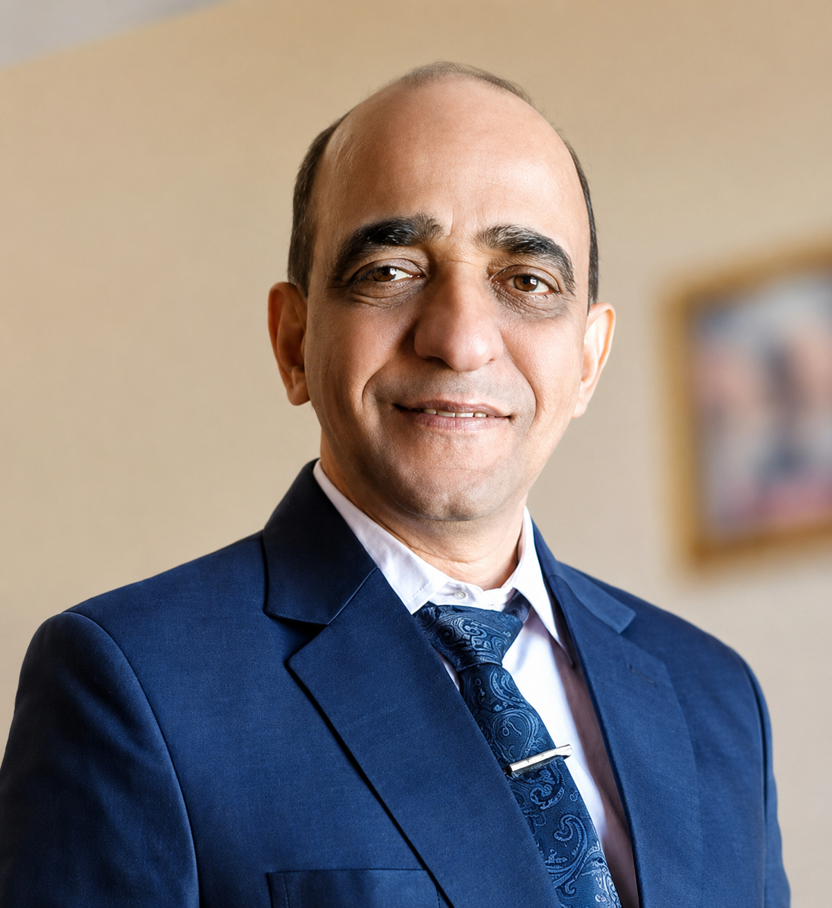

Distinguished faculty leadership and a passionate student organizing panel working together to drive technical excellence in the CSE Department, TIET.
CS-CATALYST is under the distinguished guidance of the Computer Science & Engineering Department leadership at TIET, Patiala.

Department of Computer Science & Engineering
Thapar Institute of Engineering &
Technology (TIET), Patiala
Prof. Neeraj Kumar serves as the Head of the Department (HOD) of Computer Science & Engineering at Thapar Institute of Engineering & Technology, Patiala. He is globally recognized for his research contributions, being ranked as India's #1 Computer Science Researcher and #97 in the World (by Research.com / Guide2Research). He is also listed among the Top 2% Scientists globally in the Stanford University list.
Under his visionary leadership, the CSE Department has consistently grown in academic excellence, research output, and industry collaboration. He champions the CS-CATALYST Society as a cornerstone initiative for student development and departmental outreach.
Assistant Professor — Department of Computer Science & Engineering
Thapar
Institute of Engineering & Technology (TIET), Patiala
Dr. Seema Bawa is an Assistant Professor in the CSE Department at TIET, Patiala. She actively mentors student initiatives, research projects, and departmental technical endeavors, guiding the society on academic rigor, innovation, and professional standards.

Assistant Professor — Department of Computer Science & Engineering
Thapar
Institute of Engineering & Technology (TIET), Patiala
Dr. Sandeep Verma is an Assistant Professor in the CSE Department at TIET, Patiala, and serves as the primary Faculty Coordinator of CS-CATALYST Society. He holds a Post Doc from IIT Kharagpur, a PhD from NIT Jalandhar, and an M.E. from Panjab University. He is listed among the Top 2% Scientists in the Stanford List.
He plays a hands-on role in designing, planning, and executing all CS-CATALYST initiatives, including Faculty Development Programs, Short-Term Courses, expert talks, and the flagship Q-BIT Quantum Computing Workshop series. He mentors the student organizing panel directly, guiding them on leadership and event execution.
CS-CATALYST's student organizing team is structured across five specialized domains — each critical to running world-class departmental events.
Venue coordination, scheduling, resource planning, vendor management, and overall event execution strategy.
Audio/visual setup, live streaming, lab environment provisioning, platform access, and real-time technical troubleshooting.
Creating event posters, digital announcements, social media graphics, photography, videography, and post-event highlight reels.
Speaker invitations, participant outreach, inter-departmental coordination, media coverage, and stakeholder communications.
Attendance records, certificates, participant feedback analysis, post-event reports, and official event documentation.
We are recruiting passionate CSE Department students to join the CS-CATALYST organizing team. If shortlisted, you'll be called for an interaction with esteemed faculty.